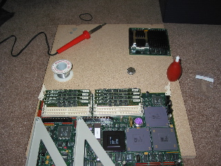

whee! I finnally got around to replacing the clock battery on my Ingido R4k. It has only been dead for about a year. (High importantce this machine has, can you not tell?) Turns out to be rather straight forward. A little wheezy because the battery is soldered down instead of socketed. But that went pretty quick. Super helpful to have found some basic instructions on what needed to be done. Which was found with google's help, since it isn't like the indigo gave a useful error, “Can't set tod clock.” Sounds kind of funny when you say it aloud, but hardly points one in the direction of a dead battery. Anyways, the indigo boots now, and there is happiness.
There is something very oddly comforting to hear the whine of the SCSI2 drives in the old machine. And at the same time, I know very well that in about an hour, the noise will start to drive me nuts. The machine boots. The clock is corrected. It is halted, and packed away again. I have no place but the middle of the floor for it right now.
Perhaps I'll have a place for it in my new place.